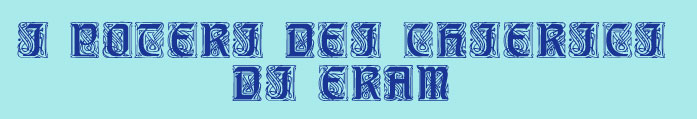
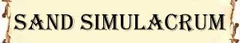
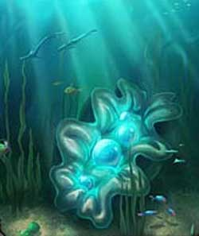

Resistenza Moderata all'Acqua;
Resistenza Superiore alla Botta;

A partire dal 3° livello di esperienza i chierici di Eram possono costruire un simulacro di sabbia. Si tratta di una creatura costruita per difendere il chierico dai suoi nemici.
Per poter costruire il simulacro il chierico deve avere accesso ad una particolare sala del Tempio di Eram. Questa sala prende il nome di Sala della Sabbia. Si tratta di una stanza circolare di almeno 10 metri di diametro. La parte esterna della circonferenza è caratterizzata da alcune file di gradoni di marmo bianco od azzurro che scendono verso l'interno della sala la cui pavimentazione si trova circa un metro più in basso. Sulla sommità dei gradoni, lungo tutta la circonferenza sono posizionate varie sottili delle colonne cilindriche di marmo bianco larghe 50 cm. e distanziate tra loro di circa 3 metri. Tali colonne reggono il soffitto della sala che è affrescato in modo tale da ricordare la profondità dei mari. La zona centrale della stanza costituisce, quindi, una sorta di vasca che viene riempita di sabbia e di conchiglie prese dal mare in modo tale da ricoprire per parecchi centimetri il pavimento. Il costo di questa sala è pari a 5000 monete d'oro ed il suo costo di manutenzione è di 50 monete d'oro al mese. In tale sala può lavorare un unico chierico di Eram alla volta. Solitamente tutti i chierici di Eram del tempio hanno accesso a questa sala ma, ovviamente, i chierici di livello più alto hanno la precedenza, in ogni caso una volta iniziato un lavoro su un simulacro il chierico potrà portare a compimento il proprio lavoro.
Quando il chierico può accedere alla sala può iniziare la costruzione del proprio simulacro di sabbia. Il processo di costruzione necessita di 10 giorni di lavoro che il chierico deve impiegare a costruire la statua di sabbia utilizzando sabbia finissima e pura assieme a conchiglie resistenti e rare, che impasta assieme ad acqua marina, mercurio e sale finissimo. Questo materiale ha un costo base pari a 100 monete d'oro per dado vita del simulacro. Al termine dei giorni di lavoro il chierico dovrà verificare, tirando un dado percentuale, se è riuscito nella costruzione del simulacro. A tale tiro saranno applicati i modificatori previsti dalla seguente tabella:
| Percentuale base di successo | 44 % |
| Modificatore dovuto al livello del chierico | + 2 % per livello del chierico |
| Ogni 10 giorni di lavoro supplementare dedicato alla costruzione | + 5 % (massimo +10%) |
| Ogni 50 monete d'oro supplementari spese in materiali per dado vita | + 3 % (massimo di +9%) |
Se il chierico possiede la competenza Construction Lore e supera una prova nella stessa riceve un bonus di +4% alla costruzione del simulacro (+8% se effettua un tiro pari ad 1 naturale, mentre riceve una penalità di -6% se effettua un 20 naturale).
Se il chierico possiede la competenza Artistic Ability (scultura) e supera una prova nella competenza riceve un bonus di +3% alla costruzione del simulacro (+7% se effettua un tiro pari ad 1 naturale, mentre riceve una penalità di -5% se effettua un 20 naturale).
Se il chierico possiede la competenza Ceremony e supera una prova nella stessa riceve un bonus di +3% alla costruzione del simulacro (+7% se effettua un tiro pari ad 1 naturale, mentre riceve una penalità di -5% se effettua un 20 naturale).
Se il chierico possiede la competenza Engineering riceve un bonus di +2% alla costruzione del simulacro (senza che sia necessario effettuare alcuna prova nella stessa).
Se il chierico possiede la competenza Pottery riceve un bonus di +2% alla costruzione del simulacro (senza che sia necessario effettuare alcuna prova nella stessa).
In ogni caso, un tiro da 96 a 100 naturale sarà considerato sempre fallimento.
Se il tiro fallisce il chierico non sarà riuscito a costruire il simulacro perdendo interamente tempo e risorse.
Se, invece, il tiro riesce il chierico avrà creato ed animato permanentemente un simulacro di sabbia. Si tratta di un costruito umanoide di taglia media, alto 2 metri e pesante 250 kg. (500 lbs.) il cui corpo è costituito di sabbia e polvere di conchiglie estremamente compatte e solide. Il simulacro di sabbia obbedirà esclusivamente agli ordini del chierico che lo creato ma in quanto non dotato di alcuna intelligenza eseguirà solo ordini prestabiliti (per dare ordini al simulacro si seguano le regole della scuola summoning laddove compatibili). In particolare il chierico potrà ordinare al simulacro di seguirlo o di seguire un'altra creatura (il simulacro seguirà chi ordinato cercando di restare a 2,5 metri di distanza), di difenderlo o di difendere un'altra creatura (il simulacro attaccherà qualsiasi creatura attacchi colui che deve difendere), di attaccare una creatura che si trovi entro la visuale del simulacro, di restare fermo (il simulacro resterà immobile). Si tenga presente, inoltre, che il simulacro difenderà naturalmente se stesso in caso sia attaccato, ciò a meno che il chierico non ordini allo stesso di non difendersi. Ovviamente il chierico può impartire anche una combinazione di più ordini al simulacro (come ad esempio di seguirlo e difenderlo) ma il simulacro potrà eseguire solo un ordine (o più ordini) alla volta non avendo lo stesso, praticamente alcuna forma di memoria. Qualora il simulacro non riesca ad eseguire un ordine, per qualsiasi motivo, si fermerà in autodifesa fino a che il chierico non cambi l'ordine impartito oppure l'ordine non diventi nuovamente eseguibile (qualora il simulacro debba seguire una creatura lo farà fino a che la stessa risulti a vista dello stesso, se la creatura invece scompare dalla visuale dopo 1 round smetterà di seguirla fino a che la stessa non riapparirà).
I dadi vita massimi che il simulacro può avere variano a seconda del livello del chierico che lo ha costruito (il chierico può comunque sempre costruire un simulacro di dadi vita minori). In particolare il simulacro potrà avere 1 dado vita, + 1 dado vita per ogni 2 livelli del chierico (quindi massimo 2 dadi vita al 3° livello, 3 dadi vita al 4° ed al 5° livello, 4 dadi vita al 6° ed al 7° livello, ecc...). Il simulacro, inoltre, avrà in ogni caso 6 punti ferita per dado vita senza che debba effettuarsi alcun tiro.
Si noti che ogni chierico di Eram può controllare un solo simulacro alla volta. Se il simulacro raggiunge 0 punti ferita sarà irrimediabilmente distrutto, se invece viene solo danneggiato il chierico di Eram può ripararlo. Per ripararlo dovrà portarlo in una Sala della Sabbia dove impiegherà 1 intera giornata di lavoro e materiale per 5 monete d'oro a punto ferita che deve riparare (ogni moneta d'oro di questo materiale ha un peso pari ad 1/10 di libbra). La riparazione sarà automatica non essendo necessario alcun tiro per effettuarla.
Le caratteristiche del simulacro saranno le seguenti:

|
|
Ambiente/Habitat | Costruito dei Chierici di Eram |
| Frequenza | Rare | |
| Organizzazione | Solitario | |
| Periodo di Attività | Any | |
| Dieta | Nessuna | |
| Intelligenza | Non intelligent (0) | |
| Punti Combattimento | Nessuno | |
| Tesoro | Nessuno | |
| Allineamento Dominante | Neutrale | |
| Numero di Apparizione | 1 | |
| Classe Armatura | 6 [10 base, -4 corazza] | |
| Movimento | 6 terrestre | |
| Dadi Vita | Variabili (6 punti ferita a dado vita) | |
| Thac0 | 21 - numero di dadi vita | |
| Numero di Attacchi | 2 Pugni | |
| Danni | 1d6 (botta) / 1d6 (botta) | |
| Poteri Offensivi | Nessuno; | |
| Poteri Difensivi | Immunità tipiche dei
Costruiti; Resistenza Moderata all'Acqua; Resistenza Superiore alla Botta; |
|
| Poteri Generici | Nessuno | |
| Vulnerabilità | Nessuna | |
| Resistenza alla Magia | Nessuna | |
| Sensi | Senso Primordiale (30 metri) | |
| Dimensioni | Medium (2 m. alto) | |
| Morale | Fearless (20) | |
| Valore in Punti Esperienza | Variabile |
Poteri Speciali
RESISTENZA SUPERIORE ALLA BOTTA (Typical Ability): Il corpo della creatura è particolarmente resistente ai danni da botta per tale motivo costei riduce del 50% per eccesso tutti i danni da botta subiti siano sia di natura magica che normale.
RESISTENZA MODERATA ALL'ACQUA (Typical Ability): Il corpo della creatura è particolarmente resistente ai danni, sia magici che naturali, prodotti tramite l'acqua (indipendente dalla tipologia di danno prodotto), per tale motivo la stessa riduce del 33% (per eccesso) tutti i danni prodotti utilizzando l'acqua o altri liquidi (come ad esempio l'acido).
Coltivazione delle Sacre Perle
|
 |
A partire dal 1° livello di esperienza i chierici di Eram devono coltivare alcune ostriche al fine di ottenere le perle sacre prodotte dalle stesse. Si noti che fa parte dei doveri religiosi dei chierici di Eram coltivare le Sacre Perle non potendo costoro esimersi da tale mansione. Queste ostriche possono essere coltivate esclusivamente nell'acqua presente nella Grotta delle Perle Sacre, una grotta sacra con una piscina naturale presente in tutti i templi di Eram. Ogni chierico, dunque, coltiverà all'interno della piscina le sue perle personali ottenendo di diritto i frutti delle stesse. Per prima cosa occorre che, nel corso di un qualsiasi mese della stagione calda di ogni anno (Artato, Crato od Isato), il chierico si rechi in giro tra le spiagge e le scogliere per trovare le ostriche che la sia divinità gli concederà. Tale ricerca dura 10 giorni (che devono essere effettuati senza interruzioni) ed è considerata una parte del rito delle sacre perle. Al termine del periodo indicato il chierico avrà trovato un'ostrica sacra per livello di esperienza (se il chierico supera una prova nella competenza Ceremony con una penalità di -4 costui avrà trovato un'ostrica supplementare). Il chierico, quindi, porterà le ostriche nella Grotta delle Perle Sacre per coltivarle. In realtà la coltivazione delle ostriche richiede poco impegno dovendo il chierico dedicare alle stesse solo 5 giorni di lavoro (che possono essere anche effettuati con interruzioni) nel corso dell'intero anno. Una volta trascorso l'anno alla fine della stagione fresca il chierico dovrà recarsi (impiegando un'intera giornata) nella Grotta delle Perle Sacre per prendere i frutti della propria coltivazione. Per ogni ostrica, dunque, il chierico dovrà effettuare un tiro percentuale al fine di verificare il frutto rinvenuto nella stessa utilizzando la seguente tabella: |
| Tiro Percentuale | Risultato | Tiro Percentuale | Risultato |
| 1-10 | Nessuna perla | 68-73 | Perla da 6 carati |
| 11-22 | Perla da 1 carato | 74-79 | Perla da 7 carati |
| 23-34 | Perla da 2 carati | 80-85 | Perla da 8 carati |
| 35-45 | Perla da 3 carati | 86-90 | Perla da 8 carati |
| 46-56 | Perla da 4 carati | 91-95 | Perla da 10 carati |
| 57-67 | Perla da 5 carati | 96 + | Sacra Perla di Eram |
A
tutti i suddetti tiri percentuali andranno applicati i seguenti modificatori (si
noti che una sola prova è richiesta ed il modificatore relativo sarà applicato
direttamente ai tiri per tutte le ostriche sacre):
- Se, nel corso dell'anno, il chierico
impiega
15 giorni di lavoro supplementari
(che non devono essere
continuativi) +5%
- Utilizzo della competenza
Ceremony:
Prova riuscita +5%,
Successo Critico +10%,
Prova Fallita -5%,
Fallimento Critico -10%
- Utilizzo della competenza
Fishing:
Prova riuscita +3%,
Successo Critico +6%,
Prova Fallita -3%,
Fallimento Critico -6%
- Utilizzo della competenza
Animal Lore:
Prova riuscita +3%,
Successo Critico +6%,
Prova Fallita -3%,
Fallimento Critico -6%
Si consideri che tutte le perle (il cui valore di mercato è pari a 50 monete
d'oro per carato) saranno tutte di qualità comune (moltiplicatore del valore *
1). Le perle trovate potranno essere vendute, regalate od utilizzate dal
chierico come costui meglio crede. La Sacra Perla di Eram, invece, non ha alcun
valore commerciale ma può essere utilizzata, esclusivamente dal chierico che
l'ha prodotta, in altri rituali sacri della divinità.
Una volta ottenuto un qualsiasi risultato le ostriche non saranno più produttive ed il chierico le libererà in mare per sostituirle con quelle trovate per il nuovo anno.
Trasformazione in Creatura Marina
A partire dal 7° livello di esperienza i chierici di Eram possono trasformarsi in una qualsiasi creatura animale marina. Questo potere, infatti, permette di modificare totalmente la loro struttura corporea. Il chierico, in particolare, può assumere la forme di un qualsiasi comune animale marino (non quindi creatura mostruosa o versione gigante di animale comune) che sia di dimensioni Small, Medium o Large. Il chierico, inoltre, non potrà assumere la forma di una creatura i cui dadi vita siano superiori al suo livello di esperienza. Il potere non avrà effetto se il chierico risulti ingombrato oppure trasporti anche un solo oggetto che sporga a più di 2 metri dalla sua figura. La trasformazione avviene alla fine del round di attivazione del potere nel quale il chierico sarà considerato stordito (stunned) ed il chierico dovrà effettuare una prova di system shock basata sul suo punteggio di costituzione. Se la prova fallisce la trasformazione avrà comunque luogo ma il chierico subirà una perdita di punti ferita pari al 25% dei suoi punti ferita massimi (perdita calcolata per eccesso) ed il suo fisico sarà stressato notevolmente in modo tale che costui risulterà stordito (stunned) fino alla fine del round successivo. Il chierico otterrà una penalità di -5% alla prova di system shock qualora desideri trasformarsi in una creatura di una taglia diversa da quella originaria. Una volta trasformato, il chierico acquisterà il fisico della nuova creatura e le sue statistiche fisiche (forza, destrezza e costituzione); acquisterà la classe armatura base del corpo della creatura (ad eccezione dei modificatori dipendenti da abilità speciali); le modalità ed il fattore movimento della creatura; la Thac0 base della creatura; le modalità di attacco fisico base della creatura (acquistando il nuovo corpo il chierico otterrà anche le capacità respiratorie della creatura, come ad esempio le branchie di un pesce). Il chierico non acquisterà, invece, alcuna abilità speciale (special attack, special defense, special weakness) della creatura in cui si è trasformato. Il chierico manterrà i propri punti ferita le proprie statistiche mentali. Tutti gli oggetti del chierico si trasformeranno con esso fondendosi nel nuovo corpo. Gli effetti di eventuali oggetti magici indossati saranno temporaneamente sospesi per la durata della trasformazione. Gli effetti magici ai quali il corpo del chierico era sottoposto prima della trasformazione continueranno ad avere effetto se compatibili con la nuova forma acquisita. Il chierico non potrà lanciare incantesimi in forma animale. In qualsiasi momento precedente al termine della magia, il chierico potrà decidere di riacquisire la sua forma originaria. Tale decisione dovrà avvenire nella fase delle intenzioni. La trasformazione necessita di un intero round nel quale il chierico sarà considerato stordito (stunned). Al termine del round il chierico dovrà comunque effettuare una prova di system shock basata sul suo punteggio di costituzione applicando le regole precedenti. Quando il chierico ritorna alla propria forma originaria costui rigenererà parte delle proprie ferite curandosi 1d12 di punti ferita precedentemente persi. Il potere termina in ogni caso al successivo flusso di energia divina di Eram. Al termine dell'effetto del potere o qualora lo stesso sia magicamente dissolto, il chierico muoia o vada in coma, costui si ritrasformerà automaticamente ed immediatamente nella sua forma originaria (in questo ultimo caso l'effetto curativo farà uscire il chierico dal coma allo stesso modo di una cura magica sempre che non abbia precedentemente raggiunto la soglia della morte fallendo la prova di system shock durante la trasformazione).